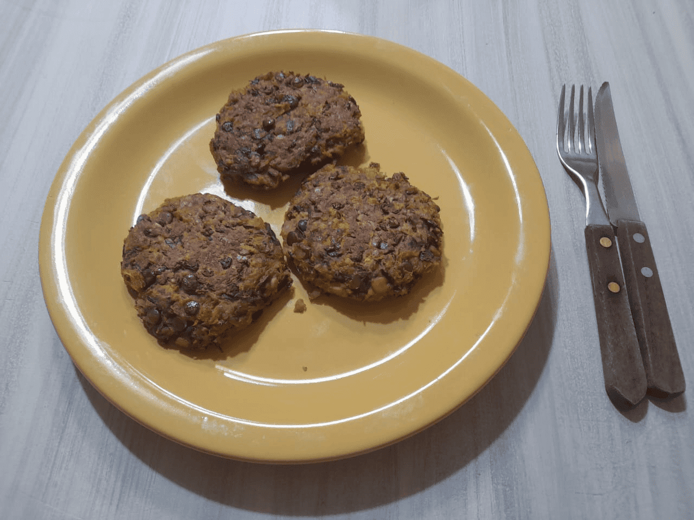

Se trata de una comida vegetariana para comer al pan o al plato, acompañada con guarnición.
La autora de la receta recomienda comerlos con limón.
Ingredientes (para 4 personas):
- 400 g de lentejas secas
- 3 dientes de ajo
- 6 ramitas de perejil
- 2 huevos
- 1 taza de avena instantánea
- 1 taza de zanahoria rallada
- 1 taza de calabaza rallada
- 1 taza de pan rallado
- Sal y pimienta a gusto

Preparación:
-
Remojar las lentejas toda la noche. Después, hervirlas y pisarlas hasta obtener
una consistencia uniforme.
-
Triturar el ajo. Salpimentar las lentejas y agregarle la zanahoria, la calabaza,
la avena, el pan rallado, los huevos, el perejil y el ajo.
-
Integrar la mezcla de forma enérgica hasta obtener una pasta.
-
Dejar reposar en la heladera, durante por lo menos una hora.
-
Humedecerse las manos para tomar porciones medianas de la mezcla (aproximadamente
del tamaño de la palma) y darles forma de medallón.
-
Colocar los medallones en una fuente previamente aceitada y cocinar al horno a una
temperatura de 220 °C por 10 minutos de cada lado. Opcionalmente, se puede colocar
queso fresco sobre los medallones para gratinar.
¡A degustar! El chef espera que les guste esta delicia.